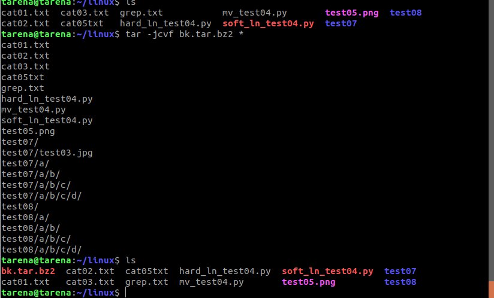
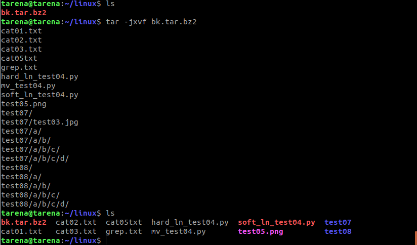

上一页
下一页
18、文件压缩解压:bzip2
tar与bzip2命令结合使用实现文件打包、压缩(用法和gzip一样)。
tar只负责打包文件,但不压缩,用bzip2压缩tar打包后的文件,其扩展名一般用xxxx.tar.gz2。
在tar命令中增加一个选项(-j)可以调用bzip2实现了一个压缩的功能,实行一个先打包后压缩的过程。
压缩用法:tar -jcvf 压缩包包名 文件...(tar jcvf bk.tar.bz2 *.c)
解压用法:tar -jxvf 压缩包包名 (tar jxvf bk.tar.bz2)
压缩

解压
